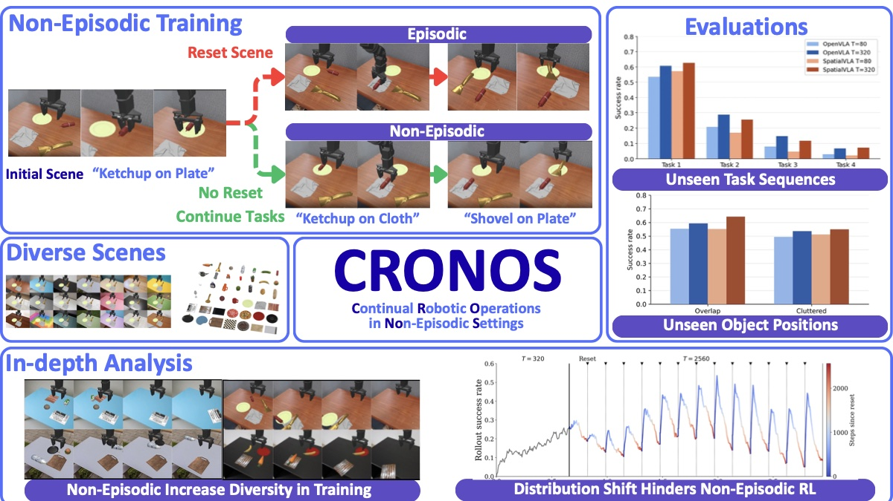
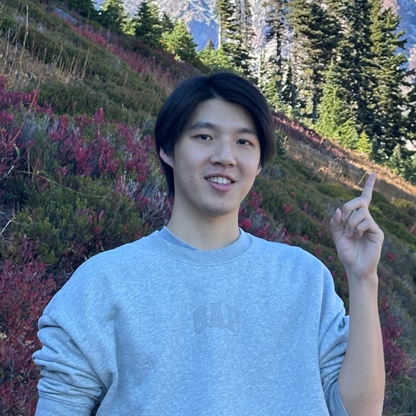
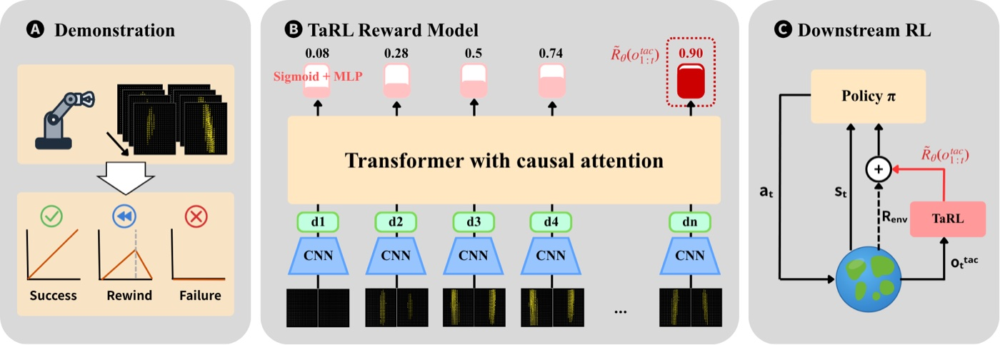
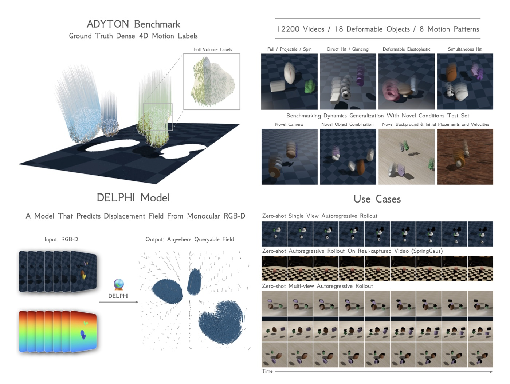
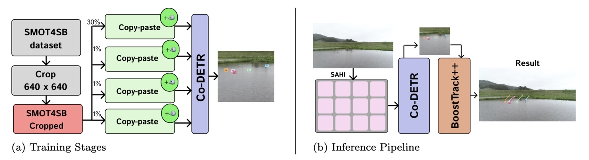
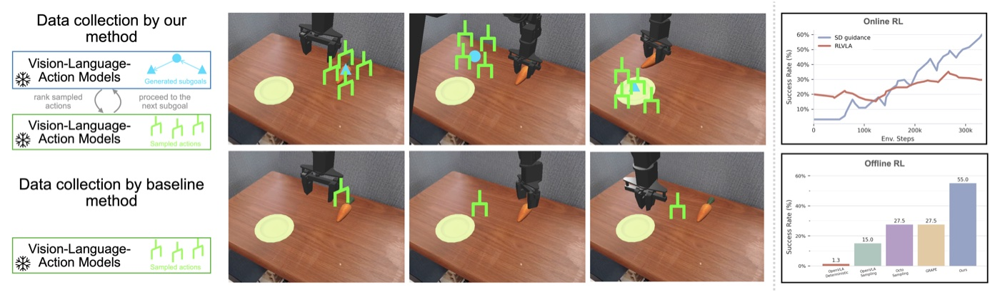
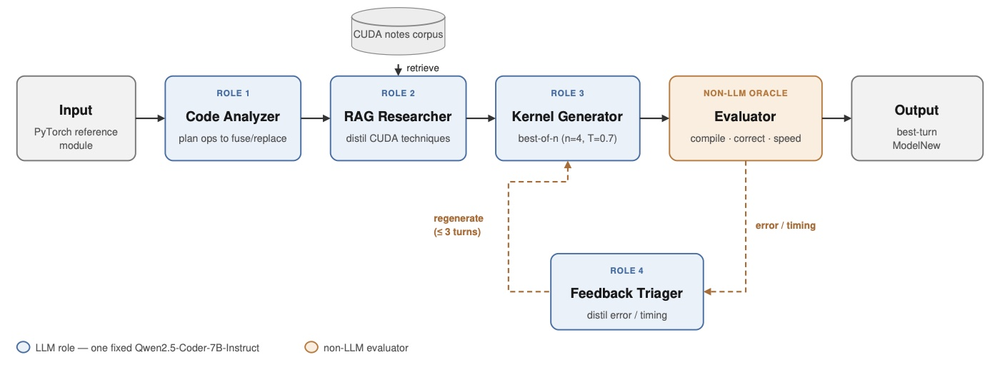

CRONOS: Benchmarking Non-Episodic Reinforcement Learning for Robotic Manipulation
Preprint, 2026 · under review
Robot learning · Reinforcement learning · World models
I am a visiting researcher at the University of Washington, collaborating with Jesse Zhang in Dieter Fox's group (RSE Lab), and a student researcher in robotics at the Allen Institute for AI (Ai2).
I received my B.S. in Computer Science and Information Engineering from National Taiwan University in 2026, where I worked with Tsung-Wei Ke in the Embodied AI Lab.
My research focuses on enabling robots to learn and adapt automatically in the real world. Toward this goal, I work on reinforcement learning, world models, learning from touch, and scalable simulation benchmarks.

I publish as Po-Yi Wu. * equal contribution, † corresponding author.

Preprint, 2026 · under review

Preprint, 2026 · under review

Preprint, 2026 · under review

IAPR International Conference on Machine Vision Applications (MVA), 2025
IEEE 3rd place, SMOT4SB Challenge

Pairs VLM-based high-level planning with VLA-based low-level control to improve sample efficiency during post-training.

An investigation paper on the limits of a small, locally run code model for GPU kernel optimization.
Seattle, WA. Learning physics in world models.
Seattle, WA. Advised by Dieter Fox and Jesse Zhang.
Taipei, Taiwan. Built a dual-arm manipulation system in Isaac Sim for contact-rich cooking tasks and transferred the learned stir-frying policy to a physical UR10e; trained manipulation policies on real robots and stabilized the deployment pipeline.
Taipei, Taiwan. Advised by Tsung-Wei Ke. Reinforcement learning and vision-language-action models for robot manipulation.
Taipei, Taiwan. Developed and optimized key features of the iSperm iOS app in Swift.
B.S. in Computer Science and Information Engineering. GPA 3.91 / 4.0.